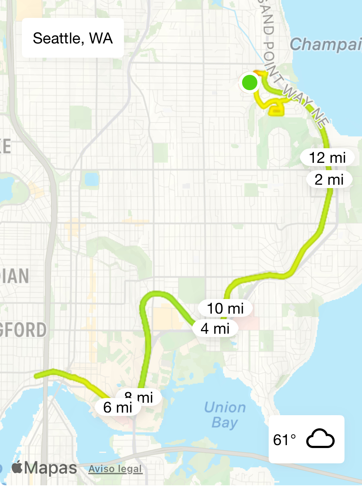

September 6 was probably a normal day for most people. It was a nice, quiet Saturday with typical mediocre Seattle weather (cloudy but not yet cold because of the lingering august heat). But for me, it was race day. Three months of training and running more than I ever had in my entire life had all led to this Fall morning. After all those weeks of training, I didn't sign up for a race since they cost money and didn't line up with me training plan unless I traveled out of Seattle, so I just mapped out how far I had to run on the Burke-Gilman trail to run just over 13.1 miles (for safety because I was not about to run 13.09 miles and not be able to say I ran a half marathon) and end up back at my house. My route, of course, included the Inverness hills and the hills back to my house because why not. If I had run these hills in every run, I couldn't possibly exclude them from my half marathon.
The race route
I didn't set an alarm the night before, so I just woke up around 7:30. At this point, I wasn't feeling nervous or excited (which apparently is the same thing, or at least that's what I tell myself when I'm highly anxious about something) instead I immediately checked my phone to see if I could even think of running that day. On Friday, a huge cloud of wildfire smoke engulfed all of Seattle with air quality index numbers in the 170s. I expected someone to come out and say this was all some sort of sick joke because there was no way that Seattle had gone the whole summer with perfectly fine air conditions and it just so happened that the one weekend that I had planned to run my benchmark, my goal, my way of proving to myself that I can achieve whatever I set my mind to, I couldn't even go outside without inhaling enough CO2 to kill a small victorian child. Luckily though, God was on my side and … magically cleared the smoke overnight? I had no idea how all of the smoke managed to leave Seattle in less than 12 hours, but it was no time for questions, I officially had to do my run that day.
I frantically looked for something to wear and realized that most of my nice workout clothes were used. So I just rewore my shorts and found a tight pink shirt that is not really the best for running, but again, I had no other options. I ate the breakfast of champions, (a piece of toast with peanut butter, banana slices, and a sprinkle of cinnamon because duh, My Cinnamon Apple) filled up my water bottle for my running belt, packed my GU energy gel, laced up my shoes, started the newest episode of the Wait Wait Don't Tell Me podcast.
40 minutes went by and so I started the Music Hat Radiolab episode I had downloaded in preparation. The episode featured two artists, one of which had a trance-like song that was actually very nice to run to. The second was an Argentinian woman named Juana Molina who has a song called "Un Dia" which was inspirational and also was trance-like. By this point, I had reached my halfway point where I turned around and I decided it was time for my running gel. Let me tell you it was the worst decision of my life. I have no idea why they are so popular with runners if there are other options of getting calories in a small package. I don't know what I expected but it was definitely gooey so the name is accurate. I had to take it in very small amounts and probably finished it over the course of half a mile because of the sheer amount of water I had to drink to wash it down. The lingering sensation of sweet dryness leaves you begging for refreshment, but too much water makes you feel bloated and slows you down. It was a lose-lose situation that every runner goes through that you cannot interfere, it is a canon event. It was right around after I finished my gel that I got a call from two of my friends who were coming to support me on the trail. That truly made my run and it was actually around the perfect time because they ended up meeting me at Met Market, where I had a little less than 3 miles left. I turned the corner and saw them, cowbell and all, cheering me on. I forced them to run a little with me so that I could see them for more time and invited them to meet me at my house because why not. I don't know exactly how long they were waiting at my house because Met Market is less than 10 minutes from my house and let's just say, I did not break a world record in that last 5k. I ended up listening to my running playlist for the last bit and surprisingly ran up the hills to my house with ease. My friends met me in my driveway, just in time for the last hill sprint. Of course I had to try and beat them since everything is always a competition and I always have to finish strong. I pressed finish in my Nike Run Club app, caught my breath, and drank an ice cold glass of water. I reached my benchmark but was left with a feeling of wanting more… so I decided that my next running goal would be 18 miles for my 18th birthday. I have no idea how I'm going to have the time to train, but why not at least try. And if I can do it, I promise, so can you. By no means did I run this half-marathon quickly, but I finished it and I truly believe that everyone can run one. Just ask Chat-GPT to make you a training plan and force yourself to go outside, (but maybe skip the energy gels and just get a bar).